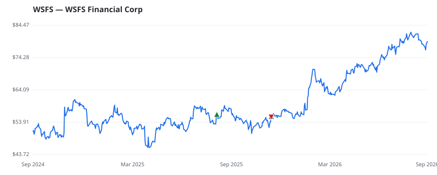

bullish · bearish · n/a — dots: price>SMA10 · SMA10>SMA50 · SMA50>SMA200 · up>down volume (20d)
Banks · mid cap · ★ 1 buyer(s) sit on a committee that regulates this industry
Members who bought WSFS earned a dollar-weighted -0.5% from their disclosure dates, versus +1.1% for the S&P 500 over the same holding windows (-1.6% alpha).

▲ green = a disclosed purchase · ▼ red = a disclosed sale (plotted on disclosure date)
WSFS Financial Corp is a savings and loan holding company. The company operates in three segments: the WSFS Bank segment provides loans and leases, and other financial products to commercial and consumer customers; the Cash Connect segment provides ATM vault cash, smart safe, and other cash logistics services; and the Wealth and Trust segment provides a broad array of planning and advisory services, investment management, trust services, and credit and deposit products to individual, corporate, and institutional clients. The majority of revenue is generated from the WSFS Bank segment. NATIONAL COMMERCIAL BANKS · website
| Revenue | $1.0B | Net income | $287.2M |
|---|---|---|---|
| Operating income | $380.6M | Diluted EPS | $5.09 |
| Assets | $21.3B | Equity | $2.7B |
| Member | Chamber | Out-performer | Disclosed buys $ | Return on buys |
|---|---|---|---|---|
| Lisa McClain ★ | house | — | $16K | -0.5% |
Disclosed $ figures are bracket midpoints — filings report ranges (e.g. $1,001–$15,000), not exact amounts.